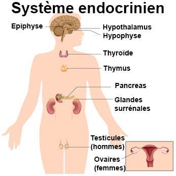

La glande thyroede
Definitions
: Les glandes et les hormones
Les
glandes
Une glande
est un amas de cellules secretant une ou plusieurs hormones et formant
un tissu macro et ou microscopique.
- Glande exocrine : secretion d’une ou
plusieurs substances en dehors du sang.
- Glande endocrine : secretion d’une ou
plusieurs hormones deversee directement dans le sang ou la lymphe.
- Glande mixte : glande ayant a la fois
une secretion exocrine et une secretion endocrine.
Les hormones
L'hormone est une substance a action physiologique specifique secretee
par une glande endocrine, et qui apres avoir ete vehiculee par le sang,
va exercer un effet determine en d’autres points du corps, sur un
organe cible.
- Hormones aminees : derivent toutes d’un
seul acide amine, la tyrosine.
- Hormones proteiques : concernent la
plupart des hormones.
- Hormones steroedes : synthetisees e
partir du cholesterol.
Anatomie de
la glande thyroede
La
thyroede est la plus volumineuse des glandes endocrines. Elle est
situee a la face anterieure du cou, au-dessous des cartilages du
larynx, contre la trachee dont elle recouvre les premiers anneaux.
Elle est constituee par deux lobes lateraux reunis l'un a l'autre par
une portion retrecie, l'isthme. Elle a donc la forme d'un H.

Les
hormones thyroediennes
Les
hormones thyroediennes sont synthetisees et stockees au centre de la
glande.
Ces hormones sont :
- La di-iodo-thyronine ou T2.
- La tri-iodo-thyronine ou T3.
- La tetra-iodo-thyronine ou thyroxine
ou T4.
- La thyrocalcitonine.
Les hormones thyroediennes sont riches en iode. L'iode est fixe sur la
glande qui l'utilise pour la synthese des hormones. Aussi la presence
d'iode est indispensable a l'activite de la thyroede, toute carence en
iode determinant un hypofonctionnement thyroedien et l'apparition d'un
goitre.
Physiologie
du corps thyroede
Actions metaboliques
La
thyroede active le processus de combustion au niveau de la cellule.
Elle agit ainsi :
- Sur l'energie
liberee par les cellules : l'hypofonctionnement de la
thyroede entraene une diminution de l'activite cellulaire.
- Sur le metabolisme des glucides,
des lipides,
des protides
dont elle accelere l'utilisation par les cellules de l'organisme,
utilisation diminue en cas d'hypofonctionnement.
- Cette augmentation du metabolisme
general entraene une elevation
des echanges respiratoires, une augmentation du volume sanguin
circulant et du debit cardiaque
se traduisant cliniquement par les palpitations et les bouffees de
chaleur en cas d'hyperfonctionnement thyroedien; l'hypothyroedie
entraene les phenomenes inverses.
- Sur une augmentation de la production de
chaleur par l'organisme.
Action sur la croissance
La thyroede a une action de stimulation sur la croissance.
L'insuffisance thyroedienne entraene un retard de croissance. A
l'inverse un hyperfonctionnement thyroedien entraene une croissance
rapide.
Actions tissulaires
La
thyroede agit sur les differents tissus de l'organisme, elle agit :
- Sur les cartilages de conjugaison dont
elle prepare la
maturation et l'ossification.
- Sur l'appareil genital : developpement
genital lors de la
puberte.
- Sur les poils, ongles, dents dont elle
favorise la
croissance.
- sur les cellules du systeme nerveux :
developpement
intellectuel et psychique.
Action de la thyrocalcitonine
Elle agit sur le metabolisme du calcium : elle entraene une
hypocalcemie (baisse du taux sanguin du calcium). Elle agit egalement
sur le phosphore, entraenant une hypophosphoremie.
Connexions
de la glande thyroede
La
thyroede obeit a une hormone secretee par le lobe anterieur de
l'hypophyse : la thyreostimuline ou TSH.
L'hypophyse elle-meme est sous la commande de l'hypothalamus qui
secrete une hormone stimulant la secretion par l'hypophyse de TSH,
c'est la TRF.
La
secretion de TRF et donc de
TSH, est determinee par le taux des hormones thyroediennes circulantes
: augmentation de la secretion en cas de baisse du taux des hormones
thyroediennes, et inversement.
La
secretion de
la thyrocalcitonine est independante de l'hypophyse et depend du taux
de la calcemie, toute hausse de celle-ci entraenant l'accroissement de
la secretion hormonale et inversement.
Voir aussi :